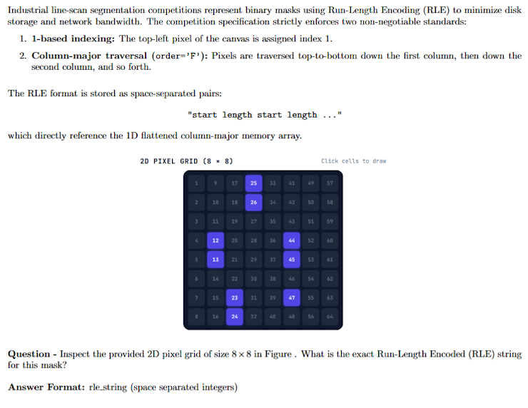

Milestone 2: Building the Segmentation Pipeline & First Submission
Industrial Surface Anomaly Segmentation · Milestone 2 Assessment
Read the student study guides before attempting the questions. Use the competition data in data/public/ and compute your own results. This document contains questions and response formats only.
Questions 1–7 use concise numerical or categorical answers. Question 8 requires recorded loss metrics and a descriptive analysis of training dynamics. Image dimensions below are height × width unless stated otherwise.
Question 1: RLE Standards — Column-Major Encoding on a 2D Grid
Industrial line-scan segmentation competitions represent binary masks using Run-Length Encoding (RLE) to minimize disk storage and network bandwidth. The competition specification strictly enforces two non-negotiable standards:
- 1-based indexing: The top-left pixel of the canvas is assigned index 1.
- Column-major traversal (
order='F'): Pixels are traversed top-to-bottom down the first column, then down the second column, and so forth.
The RLE format is stored as space-separated pairs:
which directly reference the 1D flattened column-major memory array.

Question: Inspect the provided 2D pixel grid of size \(8 \times 8\) in the figure above. What is the exact Run-Length Encoded (RLE) string for this mask?
Answer format: rle_string (space-separated integers).
Question 2: RLE Decoding in Practice — Multi-Defect Pixel Mass
In production pipelines, Run-Length Encoded (RLE) annotations must be programmatically converted back into 2D binary masks of shape \((H, W) = (128, 800)\) before they can be utilized in loss computation or visualized alongside the raw image strips.
Using the competition training annotations in train.csv, locate the four corresponding defect rows for the image with identifier:
Implement an RLE decoding function that converts each row's mask_rle into a binary mask where pixel values are 1 for defect regions and 0 for background (handling missing or empty entries by returning an all-zeros mask of shape \(128 \times 800\)).
Question: Decode the segmentation masks across all four defect classes (defect_a, defect_b, defect_c, and defect_d) for the image "0ZUU8LH57Y". What is the exact total sum of all positive (active) pixel values across all four defect masks for this image?
Answer format: Integer (e.g., 1420).
Question 3: Global Class Distribution and Defect Prevalence
Before designing model architectures, loss weights, or validation strategies, you must understand the degree of class imbalance in the training data. In train.csv, each unique image is represented across four distinct rows corresponding to the four defect categories (defect_a, defect_b, defect_c, and defect_d), totaling 45,572 rows for the 11,393 unique training images.
A row with a non-empty mask_rle entry indicates that the specific defect is present in that image.
Analyze the occurrence frequency of each defect class across all unique training images in train.csv.
Question: Based on your calculations:
- Which defect class is the most common across the images, and how many images contain it?
- Which defect class is the rarest across the images, and how many images contain it?
Answer format: most_common (count), rarest (count).
Question 4: Multi-Label Defect Co-Occurrence Matrix
Industrial steel sheets can suffer from multiple independent manufacturing errors simultaneously. To analyze how frequently different types of flaws appear together on the same strip, we construct a co-occurrence matrix.
Compute the \(4 \times 4\) defect co-occurrence matrix \(C\), where each entry \(C_{ij}\) denotes the total number of images in which both defect \(i\) and defect \(j\) appear simultaneously (with diagonal entries \(C_{ii}\) representing the total image count for defect \(i\)).
Question: Based on your co-occurrence matrix:
- Which pair of distinct defect classes (\(i \neq j\)) co-occurs the most across the training images?
- Exactly how many images contain both of these defect classes simultaneously?
Answer format: defect_pair, count.
Question 5: Co-Occurrence vs. Correlation (The Base-Rate Effect)
In Question 4, you observed that certain defect pairs share a significant number of images (e.g., defect_c and defect_d appear together in over 700 images). However, a high absolute co-occurrence count does not necessarily imply a strong statistical association — it may simply be an artifact of high baseline marginal frequency (since defect_c alone appears in 4,100 images).
To normalize for class frequencies, compute the Pearson correlation matrix for the binary indicator vectors across all images.
Question:
- What is the exact Pearson correlation coefficient (rounded to 2 decimal places) between the defect pair with the highest co-occurrence count identified in Question 4?
- Does the strong association implied by the raw co-occurrence count sustain in the correlation matrix? Explain why or why not in 1–2 sentences.
Answer format: correlation_value, Yes/No.
Question 6: Pixel-Level Spatial Overlap and Mutual Exclusivity
While Questions 4 and 5 examined defect co-occurrence at the image level, we must also determine whether different defects ever occupy the exact same physical coordinates at the pixel level.
In semantic segmentation, the Dice similarity coefficient between two binary masks \(M_i\) and \(M_j\) is defined as:
where the numerator \(|M_i \cap M_j| = \sum_{y,x} M_i(y,x) \cdot M_j(y,x)\) measures the exact pixel-level intersection (the count of shared active pixels).
For all multi-label images identified in Question 4, decode the binary masks for each present defect onto the native \((128, 800)\) canvas and compute the pairwise intersection \(|M_i \cap M_j|\) (or pairwise Dice score) across all distinct defect pairs (\(i \neq j\)).
Question:
- Across the entire training dataset, what is the maximum number of overlapping pixels (or maximum Dice score) observed between any two distinct defect classes on the same image?
- Are different defect classes on this industrial material spatially mutually exclusive at the pixel level?
Answer format: max_overlap_pixels, Yes/No.
Architectural Formulations for Multi-Defect Segmentation
When designing a deep learning segmentation system for multi-label industrial surface defects, there are two fundamentally different ways to formulate the relationship between the input image, the target defect categories, and the predicted masks:
Paradigm 1: Multi-Channel Joint Prediction (Concurrent Multi-Task)
In this formulation, the neural network ingests the raw strip image and concurrently outputs segmentation predictions for all four defect categories in a single forward pass:
where each output channel \(k \in \{0, 1, 2, 3\}\) represents the continuous logit map for defect_a, defect_b, defect_c, and defect_d, respectively.
- Mechanism: A shared encoder-decoder backbone extracts general structural features (edges, roll textures, contrast gradients) from the steel strip. The final layer branches into a 4-channel \(1 \times 1\) convolution evaluated with independent Sigmoid activations.
- Advantage (High Throughput): Requires exactly one forward pass per image to evaluate all four defect classes, making it exceptionally fast for high-speed industrial line-scan inspection.
- Trade-off (Gradient Competition): Loss gradients computed across all four heads backpropagate through the shared backbone simultaneously; dominant, high-prevalence classes (such as
defect_c) can overpower gradients from rare classes (such asdefect_b).
Paradigm 2: Conditioned / Prompted Segmentation (Query-Based)
This approach is inspired by modern prompt-conditioned architectures such as OpenAI's Whisper.
- How Whisper Works as an Analogy: In speech processing, rather than building separate models for English transcription, French translation, and voice activity detection, Whisper uses a single, unified neural network. At the start of decoding, Whisper is fed special prefix conditioning tokens (such as
<|en|>,<|transcribe|>, or<|translate|>). These prompt tokens act as an internal steering wheel: they tell the exact same shared network which task to perform on the input audio, causing its internal attention layers to adapt dynamically. - Applying Prompt Conditioning to Segmentation: We can treat visual surface defect detection in the exact same manner. Instead of forcing the network to predict all four defect types at once, we reframe segmentation as an interactive query: "Here is a steel strip image; segment only defect class \(k\)."
Here, the target defect identifier \(c\) is represented as a learned embedding vector or condition token that is injected into the network (e.g., concatenated to bottleneck feature maps or applied via feature-wise modulation).
- Mechanism: The network acts as an adaptive query engine. When prompted with
<|defect_b|>, its attention layers steer toward narrow, longitudinal scratches; when prompted with<|defect_c|>, it shifts focus toward broad, textured surface patches. - Advantage (Dedicated Capacity): The decoder concentrates its entire parameter capacity on isolating one defect mechanism at a time. Furthermore, training batches can be artificially balanced across prompt queries, naturally mitigating extreme class imbalance.
- Trade-off (Inference Latency): Evaluating a single test image across all four defect classes requires four separate forward passes (one per defect prompt), making test-time inference roughly \(4\times\) slower than joint prediction.
Question 7: PyTorch Dataset for Paradigm 1
To train a neural network under Paradigm 1 (Multi-Channel Joint Prediction), our data pipeline must supply training batches where:
- Each input image is a 3-channel RGB float tensor: \(\mathbf{X} \in \mathbb{R}^{3 \times 128 \times 800}\), normalized to the range \([0.0, 1.0]\).
-
Each target label is a single 4-channel binary float tensor: \(\mathbf{Y} \in \mathbb{R}^{4 \times 128 \times 800}\), where the four channels strictly map to the four defect classes in fixed order:
\[\text{Channel 0} \rightarrow \text{defect_a}, \quad \text{Channel 1} \rightarrow \text{defect_b}, \quad \text{Channel 2} \rightarrow \text{defect_c}, \quad \text{Channel 3} \rightarrow \text{defect_d}\]
Construct a custom PyTorch Dataset class (e.g., SurfaceAnomalyDataset) that accepts the image dataframe and image directory, and implements:
__len__: returns the total count of unique training images.__getitem__(idx): loads the \(idx\)-th image from disk (converting BGR to RGB and normalizing pixel values by 255.0), decodes its four defect RLE masks, stacks them along the channel dimension into shape \((4, 128, 800)\) withtorch.float32dtype, and returns the tuple(image, masks).
Instantiate your dataset with the training set, wrap it inside a PyTorch DataLoader with batch_size = 4, and extract the very first batch:
images, masks = next(iter(dataloader))Question:
- What are the exact 4D tensor shapes and data types (
dtype) of images and masks yielded by the DataLoader? - Why must the target mask tensor be cast to
torch.float32rather than remaining as integer/boolean (torch.uint8ortorch.bool) when using standard loss functions such asnn.BCEWithLogitsLoss()?
Answer format: images_shape, masks_shape, dtype, brief_loss_explanation.
Optional exploration: If you were to create a Dataset class for Paradigm 2, what structural changes would be required compared to Paradigm 1?
Question 8: Baseline Model Training Dynamics and Convergence
With the dataset pipeline constructed under Paradigm 1 (Multi-Channel Joint Prediction), train a baseline segmentation model (such as a 3-stage U-Net) for 5 epochs. Use an optimizer of your choice (e.g., Adam or AdamW with an initial learning rate around \(3 \times 10^{-4}\)) and evaluate on your validation holdout at the end of each epoch.
During training, log and monitor both the training loss and the validation loss across all 5 epochs.
Question:
- Report your recorded training loss and validation loss at the end of Epoch 1 and Epoch 5.
- At which epoch did your model achieve its lowest validation loss (the optimal checkpoint to save for inference)?
- Based on the trajectory of your training vs. validation loss curves across the 5 epochs, did your model begin to overfit, remain underfitting, or demonstrate healthy generalization? Briefly justify your observation in 1–2 sentences.
Answer format: epoch1_(train, val), epoch5_(train, val), best_epoch, generalization_assessment.